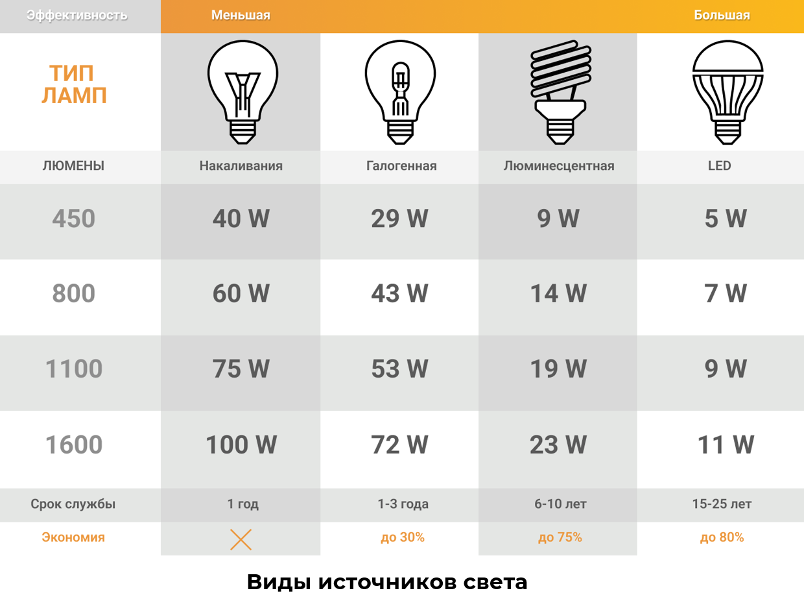

Особенности менеджмента в профессиональной деятельности
На главную
Назад
3/10
1. Ознакомьтесь с правилами безопасной работы.
2. Ознакомьтесь с понятием менеджмента.
3. Выберите, какие из предложенных определений понятия менеджмент верные.
4. Ознакомьтесь с понятием лидерства.
5. Решите ситуационную задачу – выберете вариант действий.
6. Ознакомьтесь с понятием производственного конфликта.
7. Выберите, к какому типу относиться эта производственная ситуация.
8. Ознакомьтесь с понятиями внутренней и внешней мотивации.
9. Определите, является ли мотивация этих людей внутренней или внешней.
10. Ознакомьтесь с типами участников совещаний.
11. Выберите, к какому типу участников обсуждения относится сотрудник.
12. Ознакомьтесь со способами разработки управленческих решений.
13. Классифицируйте управленческие решения, разбив их на соответствующие категории.
